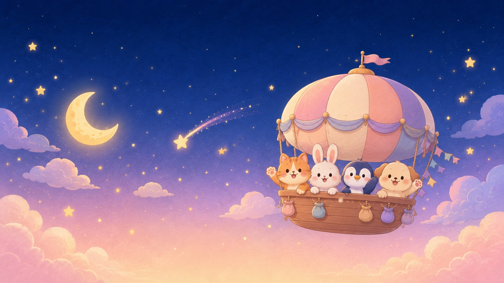
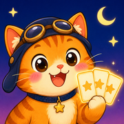

STARLIGHT EXPEDITION
声を出せない静かな夜空を、ねこのソラたち動物クルーと旅する協力カードゲームです。「おねがいカード」を、決められた仲間が勝ち取れたらクリア。全員で勝つか、全員で負けるか。合図は1ミッション1回の「シグナルランプ」だけ。ひとりでもAIクルーと50夜のキャンペーンに挑めます。
A cooperative trick-taking card game. Sail the quiet night sky with Sora the cat and an adorable animal crew. Win as a team by making sure each promise card goes to the right teammate — you may signal only once per mission. Play solo with an AI crew through a 50-night campaign.
App Storeで無料ダウンロード
iPhone / 無料 / アプリ内課金あり
ご質問・不具合のご連絡は rakko9924@gmail.com までお願いします。
For questions or issues, contact rakko9924@gmail.com.
※ 以前こちらで公開していたブラウザ版の配信は終了しました。App Store版をご利用ください。
The browser version previously hosted here has been discontinued. Please use the App Store version.